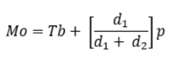
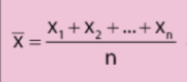
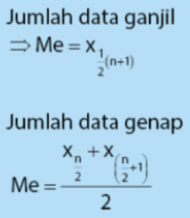

Barisan deret
Barisan adalah urutan bilangan yang memiliki karakteristik atau pola tertentu. Setiap bilangan yang ada pada barisan merupakan disebut suku dilambangkan Un dengan n adalah urutan suku. Deret adalah penjumlahan suku-suku dari suatu barisan dilambangkan dengan Sn
Misalnya
Barisan = U1,U2,U3,U4.....,Un
Deret = U1 + U2 + U3 + U4....... + Un = Sn
Barisan Aritmetika
Barisan aritmetika adalah adalah suatu barisan bilangan-bilangan dimana beda (selisih) antara dua suku berurutan merupakan bilangan tetap.
Contoh:1,2,3,4,5....
Maka, di barisan aritmetika sendiri ada beberapa rumus, yakni:
Rumus suku n

Rumus ini dapat digunakan untuk mencari suku apapun, menggunakan notasi n sebagai pacuan untuk nomer ke berapa suku tersebut
Keterangan:
Un = Suku ke-n
U1 = a = suku pertama
b = beda antar suku,selisih (Un - U(n-1))
n = posisi suku
Rumus deret aritmetika

Rumus ini dapat digunakan untuk mencari total nilai hingga pada suku ke-n
Keterangan:
Sn = Jumlah n suku pertama
U1 = a = S = suku pertama
b = beda antar suku
n = posisi suku
Data kelompok
Data kelompok adalah data yang sudah disusun dalam kelas interval tertentu. Data kelompok memiliki jumlah data yang lebih banyak dari data tunggal dan disajikan dalam tabel frekuensi, maupun diagram - diagram dalam bentuk lainnya, seperti histogram. Karena nilainya yang hampir mustahil untuk secara tepat ditentukan, maka terdapat bebearpa rumus baru, dan juga hal - hal lainnya yang baru.
Kelas: Interval nilai (misalnya 10-19)
P: Panjang kelas (misalnya p=9 dari kelas 10-19)
Tepi bawah: Kelas - 0.5 (Misalnya kelas 10-19, maka tepi bawahnya adalah 9,5)
Tepi atas: Kelas + 0.5 (Misalnya kelas1-=19, maka tepi atasnya adalah 19,5)
Nilai tengah: nilai tengah, atau "median" dari kelas (misalnya kelas 10-19, maka nilai tengahnya adalah 14.5)
Maka sama saja seperti data tunggal, data kelompok memiliki mean, median dan modus, namun tentunya dengan rumus yang jauh lebih rumit
1. Mean
.png)
Keterangan:
Sigma F: frekuensi dari data setiap kelas masing - masing
X bar: Mean
n: jumlah data
x: nilai tengah dari kelas F
2. Median
.png)
Untuk menentukan kelas mana yang median, maka kita harus menghitung frekuensi total terlebih dahulu (misalnya jika F total = 40, berarti mediannya berada di kelas dengan datum ke-20)
Keterangan:
n: jumlah total frekuensi
Tb: tepi bawah dari kelasnya median
fk: jumlah frekuensi kelas sebelumnya kelas median
fi: frekuensi kelasnya median
p: panjang kelas
3. Modus

Untuk menentukan kelas mana yang modus, maka sama seperti data tunggal kita hanya harus mencari data, dan kelas dengan frekuensi tertinggi
Keterangan:
Tb: tepi bawah dari kelasnya modus
Mo: modus
d1: selisih frekuensi kelasnya modus dengan frekuensi sebelum kelasnya modus
d2: selisih frekuensi kelasnya modus dengan frekuensi sesudah kelasnya modus
p: panjang keals dan interval data
Data Tunggal
Data tunggal di matematika, berarti sebuah kumpulan datum yang cukup sederhana, yakni data dalam jumlah yang sedikit dan dengan nilai yang sudah ditentukan, dan tidak dalam bentuk interval. Maka tentunya kumpulan data ini akan mempunyai beberapa hal, seperti Mean, Median dan modus. Contoh data tunggal: 3,4,2,3,5,1
Mean adalah rata-rata dari kumpulan data tersebut, yang dapat kita dapatkan dengan cara membagi total dari nilai semua data, dengan jumlah data yang disajikan

Median adalah "Nilai tengah" atau data ditengah yang diperoleh sesudah kita urutkan dari kecil ke paling besar data tersebut. Maka dari itu, terdapat dua rumus. Satu jika data berjumlah ganjil dan satu lagi khusus jika datanya berjumlah genap. Jika datanya berjumlah ganjil maka sangat sederhana, kita hanya perlu mengurutkan data tersebut dan mengambil data tengah. Namun jika data berjumlah genap maka kita harus mengambil dua data yang paling mendekati tengah, misalnya nilai ke-2 dan ke-3 jika terdapat 4 jumlah nilai.
